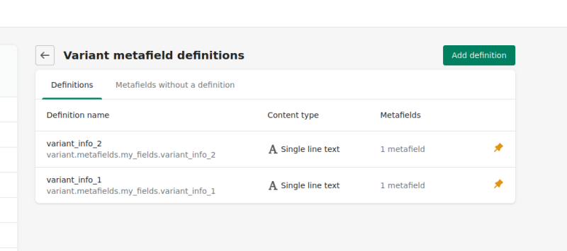
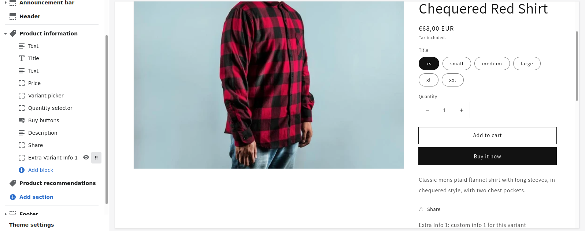

By using metafields we can store extra information on products, collections, customers, orders, blogs, pages and your shop. Then, you can use the metafield object to display the information on you website pages using simple Liquid code.
Adding custom Metafields is now built into Shopify. It can be accessed via Settings -> Metafields in your Dashboard (currently, you can only add metafields to Products and Variants with this method; Collections, Customers and Orders will be added soon). Previously, the easiest way to add metafields was by using an app, such as Metafields Guru. It is also still possible to add metafields without an app using the bulk editor, here’s how.
A metafield consists of a namespace, a key, a value, and an optional description. The namespace is used to logically group different metafields.
You can also add metafields to the product variants, but it is a little more complicated to access the variant metafield information on your page. Variant metafields can display different information depending on the selected variant. To achieve this it’s necessary to update the information depending on a change to the selected variant. This involves updating the javascript code connected to the selector.
Here is an explanation on how to achieve this with the Dawn theme, it will differ slightly depending the theme you are using.
These instructions assume that you have already added 2 metafields for a variant (in this case called variant_info_1 and variant_info_2) and that you have added these two metafields to at least one of your product variants.

First, here’s how to display one extra information field depending on a selected product variant:
- Add some html to the
main-product.liquidfile in theSectionsfolder (position it where you would like to display the shipping information), for example:
<div class="hideAll">
<p><span>Extra Info 1: </span><span class="variant_info_1"></span></p>
</div>
- Below this add some liquid code to capture the associated metafield data and store it in a variable, here called
meta_data_1:
{% capture 'meta_data_1' %}
{% for variant in product.variants %}
{{variant.id}}:{{ variant.metafields.my_fields.variant_info_1 | json }}
{% unless forloop.last %},{% endunless %}
{% endfor %}
{% endcapture %}
- Then, add this javascript inside
scripttags in themain-product.liquidfile:
<script>
const currentVariantId = {{ product.selected_or_first_available_variant.id }};
const metaData = { {{ meta_data_1 }} };
const extraVariantInfo = (id) => {
let selector = document.querySelector('.variant_info_1');
let hide = document.querySelector('.hideAll')
if (metaData[id]) {
hide.style.display = 'block'
selector.innerHTML = metaData[id];
}
else
hide.style.display = 'none'
}
extraVariantInfo(currentVariantId);
</script>
Make sure to change the naming to match your metafields. Mine is variant.metafields.my_fields.variant_info_1.
Next, in the case of the Dawn theme, you need to update the global.js file in the Assets folder. Find the code starting with onVariantChange() (it should be around line 570). Below that, add another method call for updateMeta():
onVariantChange() {
this.updateOptions();
this.updateMasterId();
this.updateMeta();
this.toggleAddButton(true, '', false);
this.updatePickupAvailability();
this.removeErrorMessage();
Then add the updateMeta code further down with the other update methods:
updateOptions() {
this.options = Array.from(this.querySelectorAll('select'), (select) => select.value);
}
updateMasterId() {
this.currentVariant = this.getVariantData().find((variant) => {
return !variant.options.map((option, index) => {
return this.options[index] === option;
}).includes(false);
});
}
updateMeta() {
extraVariantInfo(this.currentVariant.id);
}
updateMedia() { ...
Now your variant metafield should be appearing and updating as you select different variant options.
We can also add the code as a block in the main-product.liquid file . In this way the variant metafield becomes visible in the theme customizer and gives the option of rearranging the block without changing the code. This involves changes to the product.json and the main-product.liquid files.
Update product.json in the Templates folder to include a new block (in this case, I am adding one new block called variant_info_1). Also, add the new block to the block_order(you may get an error when saving these changes until you update the main-product.liquid in the next step):
{
"sections": {
"main": {
"type": "main-product",
"blocks": {
"vendor": {
"type": "text",
"settings": {
"text": "{{ product.vendor }}",
"text_style": "uppercase"
}
},
"title": {
"type": "title",
"settings": {
}
},
"subtitle": {
"type": "text",
"settings": {
"text": "{{ product.metafields.descriptors.subtitle.value }}",
"text_style": "subtitle"
}
},
"price": {
"type": "price",
"settings": {
}
},
"variant_picker": {
"type": "variant_picker",
"settings": {
"picker_type": "button"
}
},
"quantity_selector": {
"type": "quantity_selector",
"settings": {
}
},
"buy_buttons": {
"type": "buy_buttons",
"settings": {
"show_dynamic_checkout": true
}
},
"description": {
"type": "description",
"settings": {
}
},
"share": {
"type": "share",
"settings": {
"share_label": "Share"
}
},
"variant_info_1": {
"type": "variant_info_1",
"settings": {
}
}
},
"block_order": [
"vendor",
"title",
"subtitle",
"price",
"variant_picker",
"quantity_selector",
"buy_buttons",
"description",
"share",
"variant_info_1"
],
"settings": {
"enable_sticky_info": true,
"hide_variants": false,
"enable_video_looping": false
}
},
"product-recommendations": {
"type": "product-recommendations",
"settings": {
"heading": "You may also like",
"image_ratio": "adapt",
"show_secondary_image": false,
"add_image_padding": false,
"show_image_outline": true,
"show_vendor": false,
"show_rating": false
}
}
},
"order": [
"main",
"product-recommendations"
]
}
Next, in the main-product.json, place {% when 'variant_info_1' %} before the previous code:
{% when 'variant_info_1' %}
<div class="hideAll">
<p><span>Extra Info 1: </span><span class="variant_info_1"></span></p>
</div>
{% capture 'meta_data_1' %}
{% for variant in product.variants %}
{{variant.id}}:{{ variant.metafields.my_fields.variant_info_1 | json }}
{% unless forloop.last %},{% endunless %}
{% endfor %}
{% endcapture %}
There is a {% schema %} section at the end of the main-product.liquid file. Add variant_info_1 to this schema (follow the pattern for the other fields):
{
"type": "variant_info_1",
"name": "Extra Variant Info 1",
"limit": 1
},
Your new block should now appear in your theme customizer (if it doesn’t show initially, click on Add Block and select Extra Variant Info 1 from the list). Now you can drag the block up and down the list of blocks in the Product information section to change its position on the page. You may need to save your customizer changes (green “Save” button on top right of screen) for the variant description block to show on the product page.

If you need to add more than one extra metafield for a single variant, you will basically need to duplicate the steps above for as many extra metafiels as required. In the product.json add an extra block for each new metafield and add each one to the block_order:
"variant_info_2": {
"type": "variant_info_2",
"settings": {
}
}
In main-product.liquid add another {% when %} block of code, like before, just update with new names:
{% when 'variant_info_2' %}
<div class="hideAll">
<p><span>Extra Info 2: </span><span class="variant_info_2"></span></p>
</div>
{% capture 'meta_data_2' %}
{% for variant in product.variants %}
{{variant.id}}:{{ variant.metafields.my_fields.variant_info_2 | json }}
{% unless forloop.last %},{% endunless %}
{% endfor %}
{% endcapture %}
Add the new block to the {% schema %} at the end of the file.
{
"type": "variant_info_2",
"name": "Extra Variant Info 2",
"limit": 1
},
To deal with multiple metafields for each variant, it’s probably best to update your javascript to uses loops to avoid repeating the same code:
<script>
const currentVariantId = {{ product.selected_or_first_available_variant.id }};
const metaData = [{ {{ meta_data_1 }} }, { {{ meta_data_2 }} }];
const extraVariantInfo = (id) => {
const selector = document.querySelectorAll('.variant_info_1, .variant_info_2');
const hide = document.querySelectorAll('.hideAll');
for(let x = 0; x < metaData.length; x++) {
if (metaData[x][id]) {
hide[x].style.display = 'inline';
selector[x].innerHTML = metaData[x][id];
}
else hide[x].style.display = 'none';
}
}
extraVariantInfo(currentVariantId);
</script>
The global.js remains unchanged from before.
Now you should have 2 different variant metafield blocks in your customizer.
The full code for the product.json is here.
The full code for the main-product.liquid is here.
This code adds 2 metafields to a product variant.
This solution is based on answers provided here. Credit where credit is due.